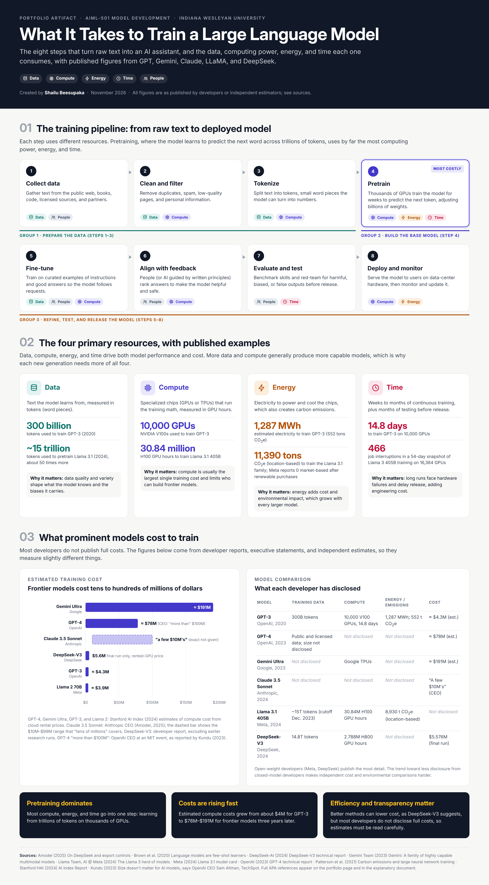

Introduction
This artifact is based on my AIML-501 Model Development portfolio assignment on the training process and resource costs of generative AI large language models.
Training a modern AI assistant requires enormous amounts of data, specialized computer chips, electricity, and time. These costs shape which organizations can build advanced models and how those models affect the environment, yet they are rarely explained in one place. This infographic brings them together for a broad audience.
Description
The infographic has three sections. The first shows the training pipeline in eight steps arranged in three groups: preparing the data (steps 1–3), building the base model through pretraining (step 4), and refining, testing, and releasing the model through fine-tuning, alignment, evaluation, and deployment (steps 5–8). The second presents the four primary resources (data, compute, energy, and time), each with published examples and a short explanation of why it matters. The third compares the estimated training costs of six prominent models in a bar chart and a table that clearly marks information developers have not disclosed.
Unlike Artifact 7, which explains how a neural network works inside, this artifact focuses on the infrastructure and economics of building large models, showing my ability to research, verify, and communicate technical cost information.

The full infographic. Select the image to open it at full size, or view the PDF above.
Objective
- Clearly illustrate the key steps in training a generative AI large language model, from data collection to deployment
- Explain the four primary resources (data, compute, energy, and time) and how each contributes to model performance and cost
- Compare published training resources and costs for specific models such as GPT-4, Gemini, Claude, LLaMA, and DeepSeek
- Communicate complex infrastructure information visually for non-technical audiences
Process
- Reviewed the course resources on how large language models and ChatGPT work, including Wolfram (2023)
- Gathered training figures from official technical reports and model cards (Meta, DeepSeek, OpenAI, Google) and from independent estimates (Stanford AI Index)
- Checked every number against its original source, and recorded what each figure measures, such as estimated rental cost versus final-run cost
- Marked information as "Not disclosed" rather than estimating it, so the graphic does not present guesses as facts
- Designed a consistent color and icon for each resource and tagged every pipeline step with the resources it uses
- Built the cost chart to scale, showing Claude 3.5 Sonnet as a range because only an approximate figure was published
- Exported the infographic as a high-resolution image and PDF, and wrote an explanatory document covering the main points, key considerations, and design rationale
Tools and Technologies Used
Value Proposition
This infographic helps students, managers, and investors understand what it really costs to build a generative AI model, in a single page. It shows that I can research technical sources, verify figures carefully, and present infrastructure and cost information clearly to decision-makers.
Unique Value: Each figure is labeled with what it measures and where it came from, and undisclosed information is marked openly, so readers can compare models without being misled by numbers that are not truly comparable.
Relevance: Useful for AI and data analytics roles that involve planning AI projects, estimating infrastructure costs, or advising on whether to build, buy, or adapt a model.
References
Amodei, D. (2025, January). On DeepSeek and export controls. https://darioamodei.com/on-deepseek-and-export-controls
Brown, T., Mann, B., Ryder, N., Subbiah, M., Kaplan, J. D., Dhariwal, P., Neelakantan, A., Shyam, P., Sastry, G., Askell, A., Agarwal, S., Herbert-Voss, A., Krueger, G., Henighan, T., Child, R., Ramesh, A., Ziegler, D., Wu, J., Winter, C., … Amodei, D. (2020). Language models are few-shot learners. Advances in Neural Information Processing Systems, 33, 1877–1901. https://doi.org/10.48550/arXiv.2005.14165
DeepSeek-AI. (2024). DeepSeek-V3 technical report (arXiv:2412.19437). arXiv. https://doi.org/10.48550/arXiv.2412.19437
Gemini Team, Google. (2023). Gemini: A family of highly capable multimodal models (arXiv:2312.11805). arXiv. https://doi.org/10.48550/arXiv.2312.11805
Kundu, K. (2023, April). Size doesn’t matter for AI models, says OpenAI CEO Sam Altman. TechSpot. https://www.techspot.com/news/98350-size-doesnt-matter-ai-models-openai-ceo-sam.html
Llama Team, AI @ Meta. (2024). The Llama 3 herd of models (arXiv:2407.21783). arXiv. https://doi.org/10.48550/arXiv.2407.21783
Meta. (2024). Llama 3.1 model card. GitHub. https://github.com/meta-llama/llama-models/blob/main/models/llama3_1/MODEL_CARD.md
OpenAI. (2023). GPT-4 technical report (arXiv:2303.08774). arXiv. https://doi.org/10.48550/arXiv.2303.08774
Patterson, D., Gonzalez, J., Le, Q., Liang, C., Munguia, L.-M., Rothchild, D., So, D., Texier, M., & Dean, J. (2021). Carbon emissions and large neural network training (arXiv:2104.10350). arXiv. https://doi.org/10.48550/arXiv.2104.10350
Stanford Institute for Human-Centered Artificial Intelligence. (2024). Artificial intelligence index report 2024. Stanford University. https://aiindex.stanford.edu/report/
Wolfram, S. (2023, February 14). What is ChatGPT doing … and why does it work? Stephen Wolfram Writings. https://writings.stephenwolfram.com/2023/02/what-is-chatgpt-doing-and-why-does-it-work/